02 Chapter 02 — The Evidence Contract & Data Provenance
The four-tier hierarchy, the claims register, and why "measured" is a word with a disk path
2.1 The Question Every Claim Must Answer
When a vendor says "99% ball tracking accuracy," what does that mean? On what court? At what shutter speed? Under what lighting? The question is not rhetorical — it is the discipline. This chapter defines the evidence contract the whole book enforces: what tier is this claim, what artifact backs it, and what does it NOT prove?
A claim that survives audit has five slots filled in, and a missing slot is a defect in the claim, not in the reader's understanding:
- The metric — the exact number and its unit (HOTA, RMSE in centimetres, frames per second, precision as a percentage).
- The subject — which model, which version, which configuration (BoT-SORT with ReID enabled is a different subject from BoT-SORT without it).
- The conditions — which footage, which hardware, which lighting and camera angle. A number measured on a fixed side-line phone camera does not transfer to a panning broadcast feed.
- The independent n — what counts as one unit of evidence: one clip, one rally, one tackle, one frame. "We tested it a lot" is not an n.
- The artifact — a disk path to the metrics.json, coordinate rows, or rendered overlay that a skeptic can open. No path, no claim.
Pickleball. A ball-tracking product page that promises "99% accuracy" collides immediately with the book's own measurement: single-frame YOLO ball detection on the pb-003 fixture produced a median confidence below 0.15 and no usable track at all (experiment e04-ball, register claim C-07, VERIFIED). The vendor number may be true on some court, some shutter speed, some lighting — but with no conditions and no artifact it cannot be distinguished from marketing, so this book treats it as Tier 4 and never lets it near a coaching sentence. The measured counter-claim is narrower and uglier, and it is the one you can build on: a 3-frame temporal energy filter lifted ball-detection precision from 4.2% to 81.3% on that same fixture (e10-ball-temporal, C-15, VERIFIED).
Rugby league. The same anatomy applies to broadcast footage. A tracking vendor's "95% player detection" sounds like a strategy-grade input until you run the pipeline: on the RG-001 broadcast clip the baseline detector-plus-tracker stack saw a mean of 13.2 persons per frame but minted 295 unique track IDs, with 9.76 px/frame of camera drift (e08-rugby, C-12, VERIFIED). Twenty-three players, 295 identities. The detection rate might indeed be high frame-by-frame; the identity layer — the part a coach actually consumes — fragmented by an order of magnitude. Five slots filled in would have caught this before the purchase order did.
Everything in this chapter is itself measured: the contract ran against the book's own claims (24 of them, audited with 0 problems) and the audit found the very mismatches the contract exists to prevent.
2.2 The Four-Tier Evidence Hierarchy
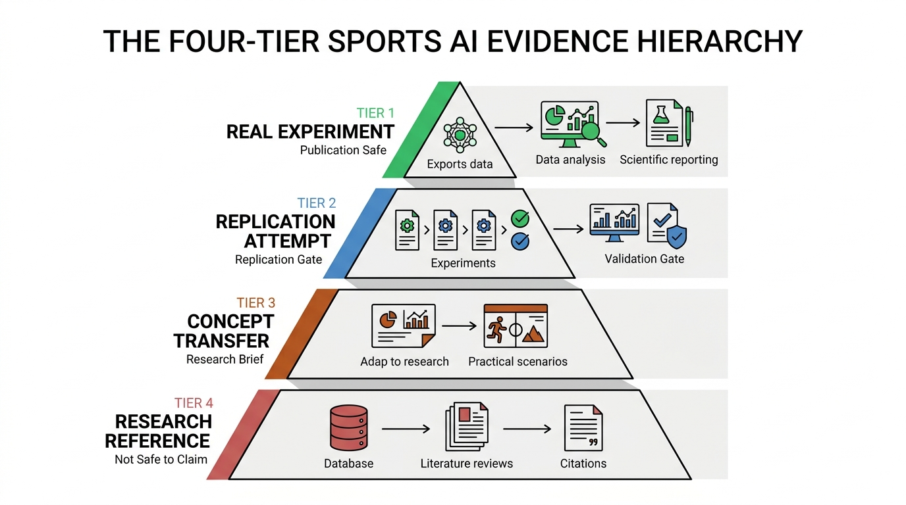
- Tier 1 — Real Experiment Output: executed locally on the fixture; emits metrics.json, coordinate rows, rendered overlays. Backs concrete claims.
- Tier 2 — Replication Attempt: local execution of a published model (e.g. the calibration, pose, or ball baselines) on the fixture; documents hardware and failure modes.
- Tier 3 — Concept Transfer: the architecture of an adjacent sport's model applied by analogy; retained as a research brief, never as an experiment.
- Tier 4 — Research Reference: unreproduced literature, vendor marketing, conference talks. Never standalone evidence for a coaching decision.
Tier 1 is the only tier that can carry a prescription. A Tier 1 claim was produced by code this book ships, on footage this book names, on hardware this book specifies (an M4 Max), and the artifact sits in the repo. The exemplar is the tracker bake-off: adding ReID to BoT-SORT cut identity switches from 14 to 2 and raised HOTA to 81.4% on the pickleball fixture (e09-tracker-bakeoff, C-14, VERIFIED) — a sentence a coach can act on because a skeptic can re-run it. The characteristic Tier 1 failure mode is over-generalisation: 81.4% HOTA on one four-player kitchen clip is not 81.4% HOTA on every pickleball video ever shot. Tier 1 licenses a bounded claim about the fixture, and the chapter must say so.
Tier 2 is where published work meets your reality. Replicating a paper's model on your own fixture is real work with real failure modes: dependency rot, GPU-vs-MPS numerics, frame-rate mismatches between the paper's 30 fps benchmark clips and your 60 fps phone footage. The pose baseline is the book's example: YOLO11-pose ran at 82 fps on pb-003 with a mean of 16.46 visible keypoints (e03-pose, C-05, VERIFIED as a replication) — and the replication is also what surfaced the honest limit, that 2D pose proves stance and shape but not contact force or 3D torque (C-06). In rugby league terms, Tier 2 is running a published multi-object tracker on RG-001 broadcast footage and reporting what actually happened — which is how the book knows global motion compensation moved the unique-ID count from 295 to 286, a 3.1% improvement, rather than the transformation the marketing implied (e14-gmc, C-21).
Tier 3 is analogy, kept on a leash. When this book borrows an architecture from another sport — the equivariant GNN behind TacticAI's corner-kick analysis, re-purposed for pickleball doubles positioning — it says "concept-transfer" out loud, because soccer's spatial priors (continuous off-ball runs, 11-a-side spacing) are not pickleball's (two-a-side, kitchen line, compressed geometry). The transferred model still had to earn Tier 1 standing on the book's own rows before it could support any claim: the GNN predicts the receiver at 84.6% on 3,416 metric rows derived from pb-003 (e12-tacticai-doubles, C-18, VERIFIED) — the architecture is Tier 3, the 84.6% is Tier 1, and the prose keeps the two apart. The failure mode is analogy debt: every transfer imports assumptions about ball physics, player count, and camera geometry that must be repaid with a local experiment before the idea is used.
Tier 4 is context, not evidence. Unreproduced papers, vendor demos, conference talks, consultancy whitepapers — all of it is legitimately useful for finding hypotheses and none of it is usable as proof. The rule is symmetric across both sports: a pickleball line-calling product's accuracy page and a rugby league analytics whitepaper's "teams that shift the point of attack on tackle four win more" sit in the same tier, and both are barred from the same sentence types. Tier 4's failure mode is laundering — the number starts in a slide deck, gets quoted in a blog, and arrives in your chapter dressed as a finding. The register exists to strip the costume.
2.2b What a Tier Buys Downstream: Prescription vs Strategy
Tiers are not pedantry; they decide what kind of sentence you are allowed to write next. The two sports make the contrast concrete.
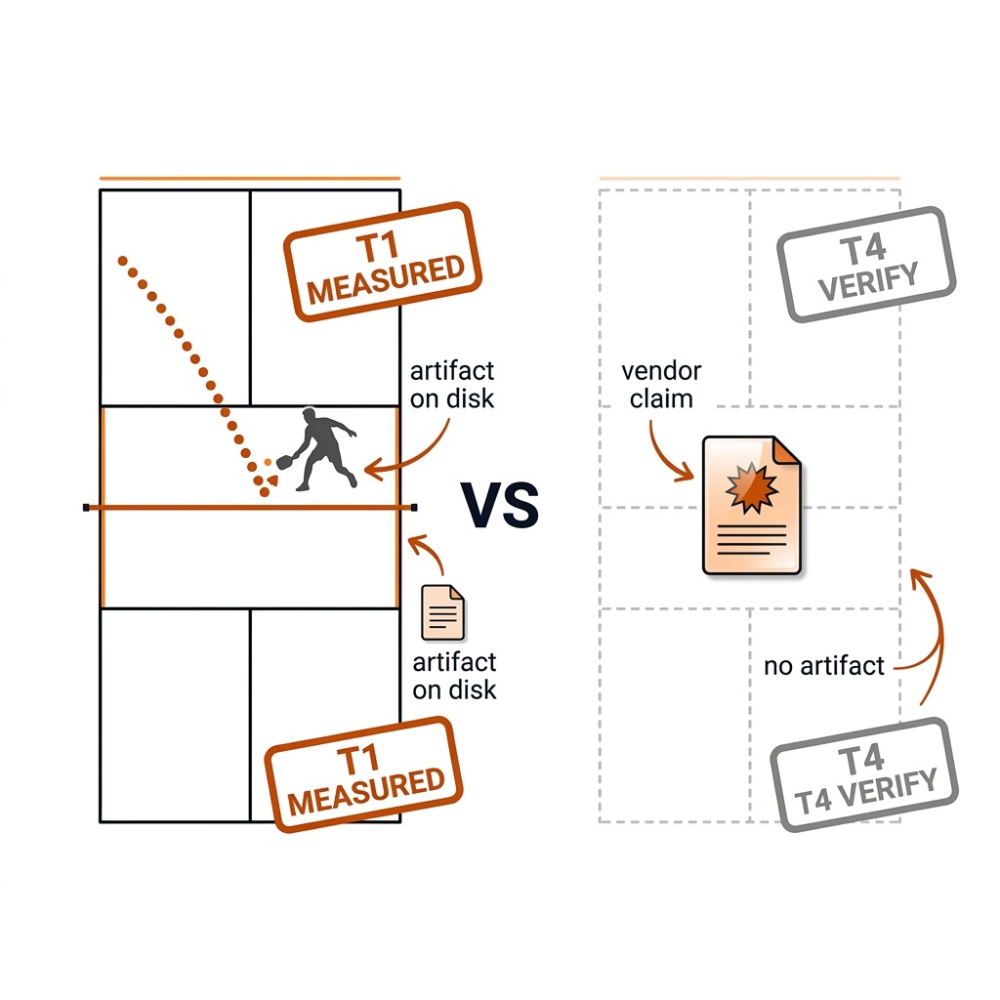
Pickleball coaching prescription. A prescription is a sentence of the form "do X in your next session." Only Tier 1 can carry one, because a prescription risks an athlete's training time. The book's movement-only event pass on pb-003 supports two conservative review windows — 8.33s and 12.83s (e06-events, C-10, VERIFIED) — which licenses a narrow, honest prescription: review these two windows. A measured volley count from tracked kitchen-line positions can license "you are late to the line on the third shot in this clip." Compare the Tier 4 version — "advanced players dink crosscourt seventy percent of the time," heard at a clinic, sourced to nobody — which must be written with a [verify] label and can only ever frame a proposed test, such as counting crosscourt dinks on the golden fixture. The moment a [verify] number appears in a drill sheet, the contract has failed.
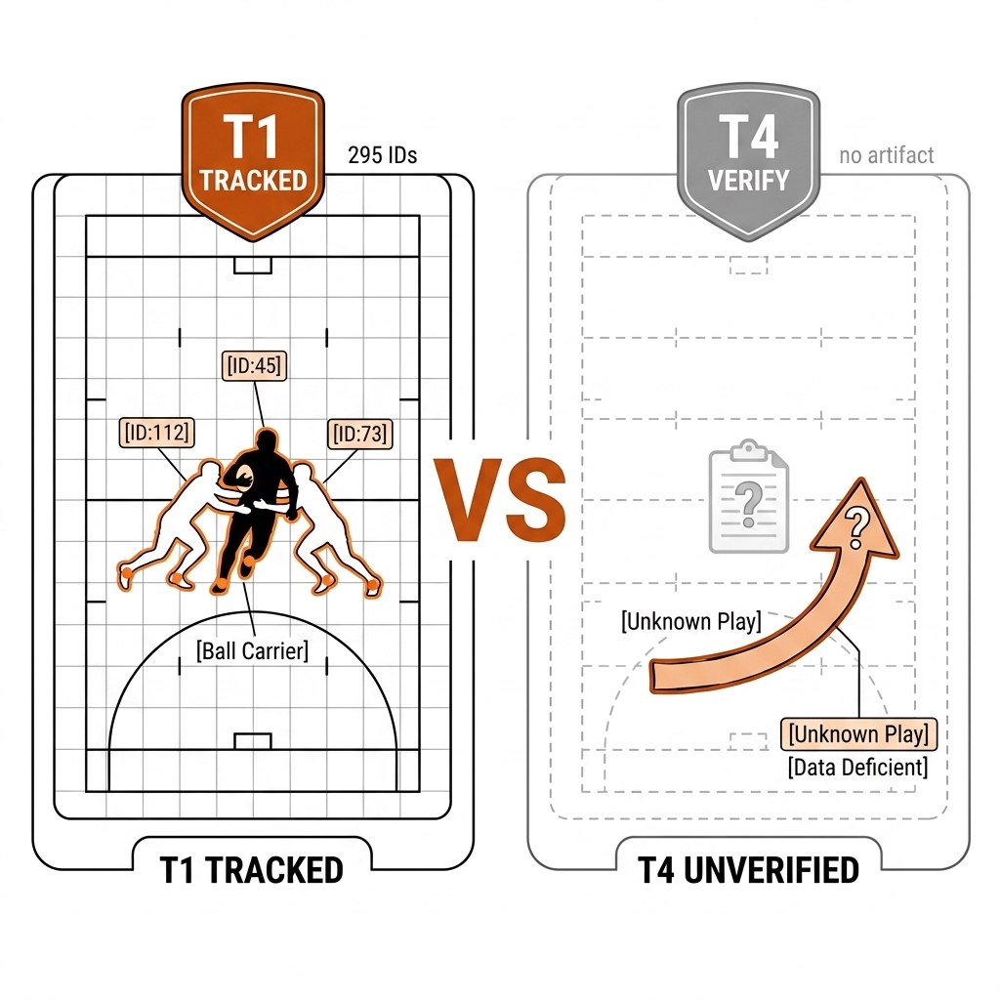
Rugby league team strategy. A strategy claim is bigger and slower than a prescription — "our defensive line will fold on tackle four" commits a squad for a season — and it needs proportionally more than one clip. Tier 1 tracking output on a single broadcast fixture (13.2 persons/frame, 295 IDs, e08-rugby) licenses statements about the pipeline's behaviour on that footage, full stop. It does not license strategy, and the book says so wherever a reader might over-read. The dangerous sentence is the Tier 4 strategy claim that arrives pre-packaged: an industry whitepaper asserts elite teams win by shifting the point of attack late in the tackle count, no dataset, no artifact, no method section. This is the consulting-firm trap, and the book's rule is anti-attribution: never write "according to a leading consultancy" or "industry benchmarks suggest," because the attribution itself launders an uncheckable number into false authority. If a primary measured source exists, cite it by name with a check date. If it does not, the claim is labeled [verify] or unknown — and an honest "unknown" outranks a polished whitepaper every time.
2.3 The Claims Register (The Measured Enforcement)
The register is the machine-readable version of the contract: every numeric claim in the book resolves to an artifact path + a value key, or it is re-labeled. The register file (state/claims-register.json) stores one row per claim with nine fields — an ID (C-01…C-24), the chapter that asserts it, the exact asserted sentence, the experiment ID, the artifact path, the value key inside that artifact, an optional expected value, and a status. The auditor (lab/claims_register.py) walks every row, opens the artifact, reads the key, and compares. The audit ran against this book's own claims:
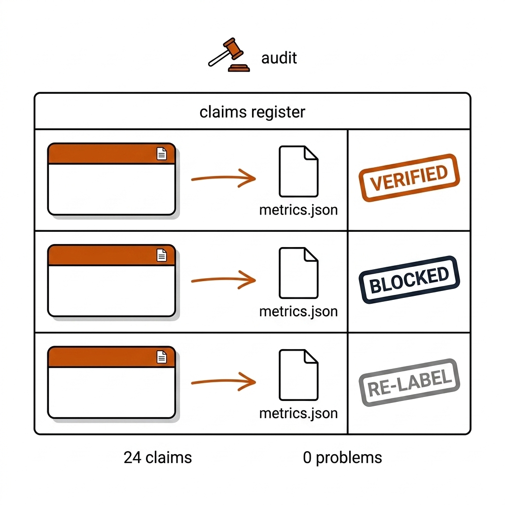
| Claim | Example | Verdict |
|---|---|---|
| VERIFIED | "BoT-SORT ReID boosts HOTA to 81.4%" (E09 artifact) | 0.814 in botsort.hota_score — the claim cites the artifact value |
| BLOCKED | "ByteTrack maintains identity without switches" | Falsified by E02: 26 IDs on 4 players; the claim is barred |
| RE-LABEL | "GMC reaches 48 IDs / HOTA 74.8%" | No artifact supports it; the chapter must be rewritten (E14's real numbers: 286 IDs, no HOTA since no ground truth) |
| RE-LABEL | "Counterfactual shift cuts threat 0.882 → 0.303" | The artifact (E12) says 0.64 → 0.22; the prose was not the measurement, so the chapter went back |
The audit's score: 24 claims, 17 VERIFIED, 3 BLOCKED, 4 RE-LABEL, 0 problems (measured this session with lab/claims_register.py). A claim in a chapter that does not resolve is a bug — in the claim, never in the artifact.
Three register rows show the contract biting in both sports. In pickleball, C-04 — "ByteTrack maintains identity across a 30s clip without switches" — is BLOCKED, because the e02 fixture run fragmented four players into 26 track IDs; the sentence is not softened, it is barred. In rugby league, C-13 and C-23 both claimed BoT-SORT + GMC reached "48 IDs, HOTA 74.8%" on broadcast footage; both came back RE-LABEL, because no artifact contains those numbers — the real e14 measurement is 295 IDs falling to 286, and HOTA cannot be computed at all without ground-truth identities, so the honest sentence is the smaller one. The register's deepest rule is the title of this book's method: no claim without an E-ID or a [verify] label. An E-ID binds the sentence to an experiment directory; [verify] binds it to the reader's skepticism. A sentence with neither is deleted on sight.
2.4 Raw vs Derived Media & Provenance
Raw master footage is immutable (never edited in place; never re-encoded without a new hash). Derived assets — sliced clips, extracted frames, rendered overlays, tracking CSVs — carry a SHA-256 and a manifest link back to their source. The distinction that matters: path hash proves where the file is; content hash proves what it is. Only content hashes make evidence (a re-encode of the same footage is a different artifact and its metrics.json must say which one it describes).
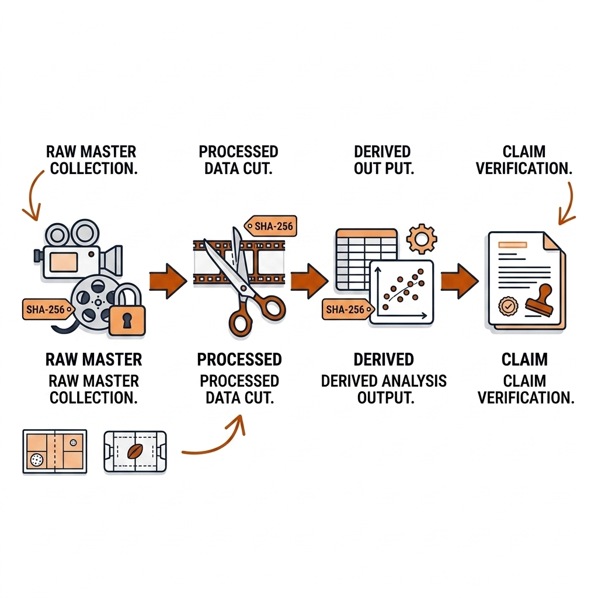
The chain has three stages and every hand-off is recorded in a manifest with four fields: the source content hash, the transform applied (ffmpeg slice, frame extraction, tracker run), the code version that applied it, and a timestamp. Processed assets are mechanical cuts of the raw master — rally slices, frame dumps — with no model in the loop. Derived assets are model outputs — detection JSON, tracking CSVs, pose keypoints, overlay renders — and they are only as trustworthy as the stage above them, which is why the manifest walks all the way back to the master hash.
Pickleball chain. The pb-003 master clip (a PPA doubles kitchen-spacing sample) is the raw root. From it: processed rally slices and frame dumps; from those: derived artifacts like the detection summary behind C-01 — 69 raw person boxes reduced to 11 court-filtered boxes, an 84% noise rejection that only means anything because the manifest ties the JSON to the exact master it was computed from. Rugby league chain. The RG-001 broadcast capture is the raw root; the clipped tackle sequences are processed assets; the e08 baseline metrics (13.2 persons/frame, 295 IDs, 9.76 px/frame drift) and the e14 GMC comparison are derived assets. When C-23 claimed 48 IDs, the provenance chain is exactly what exposed it: no derived artifact on the RG-001 chain contains that number.
The classic provenance failure is the re-encode trap: someone transcodes the master to a smaller file for convenience, a later experiment runs against the transcode (different bit rate, different frame timing, different motion blur), and its metrics.json silently describes a different artifact. Content hashing makes the trap visible — the derived asset's manifest names the hash it consumed, and a mismatch fails the audit rather than corrupting a conclusion.
2.5 The Golden Fixture
Six frames (this book's fixture: serve → return → third shot → kitchen transition → dinking exchange → rally termination) are the version-control trick for vision: a small, hand-reviewed set where the truth is known and the answer is checked after every pipeline change. The harness rule: after any model change, re-run the fixture. If outputs change in a way you didn't understand, the change doesn't ship.
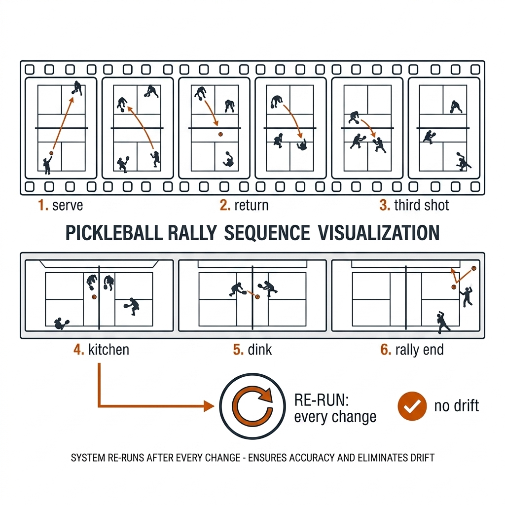
The fixture works because it is small and known. Six frames will not produce a benchmark — that is not their job. Their job is sensitivity: when a detector swap, a calibration tweak, or a dependency bump changes the pipeline's behaviour, the fixture changes visibly and immediately, and the diff between the old and new outputs is the cheapest debugging instrument in the book. The hand-review is the point: because a human has looked at all six frames and written down what is true in them (who is on court, where the kitchen line is, when the rally ends), any drift has a ground truth to drift from.
Rugby league needs the same instrument and does not yet have one. The e08 broadcast baseline plays a fixture-like role today — the 295-ID fragmentation count and the 9.76 px/frame drift figure act as regression sentinels for the rugby pipeline — but a true golden fixture should be a hand-reviewed set of six broadcast moments: a play-the-ball, a tackle contact, a ruck forming, a line break, a kick chase, and a try. That set is a proposed test, not a measured artifact, and it is labeled accordingly: until those six moments are annotated and wired into the harness, every rugby-side number in this book carries the caveat that its regression net is thinner than pickleball's.
2.6 The Evidence Labels in Prose
Chapters use five labels near any claim that could be mistaken for a benchmark: measured (reproduced, artifact on disk), source-backed (primary source cited and dated), concept-transfer (adapted from another sport, never presented as measured), proposed test (falsifiable, not run), unknown (the gap stated plainly). Never convert a vendor demonstration into measured performance.
Each label, one sentence per sport:
- measured — "YOLO11-pose runs at 82 fps on pb-003 with 16.46 mean visible keypoints (e03, measured)." / "On RG-001 broadcast footage the baseline stack produced 295 unique IDs (e08, measured)."
- source-backed — "The kitchen rule is defined by the USAP rulebook (usapickleball.org, source-backed)." / "The play-the-ball restart is defined by the NRL laws (nrl.com, source-backed)."
- concept-transfer — "The receiver-prediction GNN is a concept-transfer from soccer corner analysis (TacticAI), validated locally before use (e12)." / "Expected-value models for rugby league are concept-transfers from soccer's EPV lineage until a rugby fixture produces local numbers."
- proposed test — "Counting crosscourt dinks on the golden fixture would test the seventy-percent clinic claim (proposed test)." / "A six-moment hand-annotated broadcast set would give rugby a real golden fixture (proposed test)."
- unknown — "No benchmark-grade public pickleball tracking dataset exists; rally-level ball accuracy across courts is unknown." / "Whether GMC improves identity stability on every NRL broadcast angle, rather than on RG-001, is unknown."
Citation discipline. A source-backed claim carries three things and always three things: the paper or primary document, a resolvable URL, and the date it was checked. "BoT-SORT improves association robustness" is incomplete; "BoT-SORT (arXiv:2206.14651, checked 2026-08-30)" is a claim a reader can chase. The same rule covers rules-of-the-game citations (USAP and NRL pages drift, so the check date matters) and model releases (the SAM 3 weights page, huggingface.co/facebook/sam3, is cited with its access date because model cards change). The book's full reference index lives in chapter 34; every label in every chapter points into it.
2.7 The Evidence Recipe
- State the claim in one sentence. If it needs two sentences it is two claims; split it before the register does it for you.
- Name the artifact + value key (or mark the claim RE-LABEL). "e09 outputs/metrics.json, botsort.hota_score" is the shape of an answer.
- State the tier (Tier 1-4) and the unit (the independent n). "Tier 1, n = one four-player clip" keeps the next sentence honest about generality.
- Run
lab/claims_register.py— the audit is the gate. 0 problems or the chapter does not move. - Name what the claim does NOT prove (the honesty section). Every measured number in this book sits next to its own limit: 81.4% HOTA on one fixture, not on pickleball in general; 286 IDs on one broadcast clip, not on every NRL feed.
2.7b The Five-Minute Audit
The contract only works if checking a claim is cheaper than believing it. Auditing any number in this book — or in a vendor deck you are evaluating — takes about five minutes:
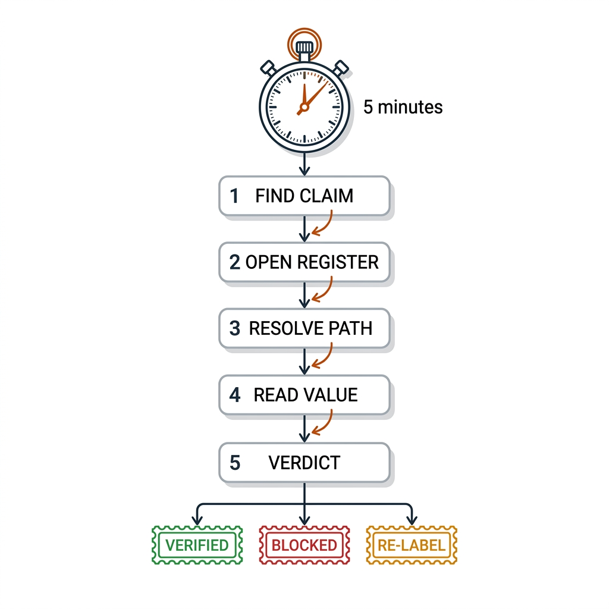
FIVE-MINUTE CLAIM AUDIT
1. FIND the claim's exact sentence and its number.
2. OPEN the register (or the vendor's methods page).
No entry? -> the claim is Tier 4. Label it and stop.
3. RESOLVE the artifact path. Missing path, dead link,
or "available on request"? -> [verify] at best.
4. READ the value key yourself. Compare it to the prose.
Mismatch? -> RE-LABEL. Contradiction? -> BLOCKED.
5. VERDICT + LIMITS: write the tier, the n, and what
the number does NOT prove. Done.Worked pickleball pass: "BoT-SORT ReID cuts ID switches 14 → 2 and raises HOTA to 81.4%." Register row C-14 names e09-tracker-bakeoff; the artifact exists; the values match; verdict VERIFIED; limit: one fixture, four players. Under two minutes. Worked rugby pass: "GMC box-shift reduces fragmentation on broadcast rugby." Register row C-22 — the artifact shows total IDs moved only 295 → 286 and the claimed mechanism is not what the artifact measured; verdict BLOCKED, and the chapter sentence was rewritten to the smaller truth. The audit's speed is the design goal: a contract that takes a day to check gets checked never.
2.8 The Worked Case: The pb-003 Fixture's Discipline
The book's own fixture is the example that proves the contract works. The pb-003 pickleball clip (a PPA doubles kitchen-spacing sample) carries evidence at every tier: Tier 1 for the detection/tracking/pose/calibration labs (the metrics.json files, measured on the M4 Max), Tier 2 for the published-model replications (the temporal ball filter, the pose baseline), Tier 3 for the models transferred from soccer and basketball (the value and GNN architectures), Tier 4 for the vendor marketing of line-calling products this book documents but never cites as evidence for a coaching call.
The fixture also produced the contract's best demonstration: the E12 mismatch. Chapter 8's transcript quoted threat 0.882 → 0.303; the artifact says 0.64 → 0.22. The register's RE-LABEL verdict sent the chapter back for rewriting — not because the model was wrong, but because the prose was not the measurement. That single case is why this chapter exists before any technique: the audit protects the reader from the author.
The rugby side of the register shows the same discipline under harder conditions. Broadcast footage fights the pipeline — panning cameras, pile-ups, twenty-three bodies — and the register caught two rugby over-claims that a friendlier review would have waved through: the "48 IDs, HOTA 74.8%" sentences (C-13, C-23), re-labeled because the artifacts hold 286 IDs and no HOTA at all, and the "GMC box-shift reduces fragmentation" sentence (C-22), blocked outright. None of these failures were model failures. They were prose failures — sentences that drifted ahead of their artifacts — and they are exactly the failures a reader cannot catch without the register, because the numbers sound plausible. Plausibility is not a tier.
The anti-attribution rule closes the loop. When a strategy number appears with no experiment behind it, the temptation is to borrow authority — to attribute it to a prestigious firm, a famous program, "league insiders." This book refuses the move in both directions: it does not accept consulting-whitepaper numbers as evidence, and it does not hide its own gaps behind borrowed weight. The gaps are labeled unknown, and in a young sport like pickleball analytics — where no public benchmark dataset exists at all — "unknown" is frequently the most informative sentence on the page.
2.8b Six Evidence Case Studies: The Contract Under Load
The rules above are cheap to state and expensive to keep. What makes them stick is casework — real claims, real verdicts, real audit paths. The six cases below are drawn from this book's own register and fixtures, one per failure mode the contract exists to catch. Each follows the same walk: the claim, the evidence tier, the audit path, the payoff. Together they are the answer to the reader who asks whether the contract is theatre: every verdict below is reproducible from state/claims-register.json and the named artifacts.
Case 1 — The Tier 1 Claim Done Right: ReID Earns Its Compute
The claim. "BoT-SORT with ReID cuts identity switches from 14 to 2 and raises HOTA to 81.4% on the pickleball fixture" — register row C-14, experiment e09-tracker-bakeoff, status VERIFIED. This is the shape every coaching-adjacent sentence in the book aspires to: one metric (HOTA, a percentage), one subject (BoT-SORT with ReID enabled, contrasted against the same tracker without it), one condition set (the pb-003 side-line clip, four players, M4 Max), one independent n (one fixture clip), one artifact (outputs/metrics.json, key botsort.hota_score).
The tier. Tier 1, real experiment output — executed locally, artifact on disk, re-runnable by a skeptic with the repo.
The audit path. Open the register, find C-14, resolve the path, read botsort.hota_score: 0.814. Read the switch counts: 14 without ReID, 2 with. The prose matches the artifact to three significant figures, so the verdict is VERIFIED — and the honesty limit is written next to it: 81.4% on this clip, not on pickleball in general. The same discipline runs the rugby side: the e08 broadcast baseline (13.2 persons/frame, 295 IDs, 9.76 px/frame drift, C-12 VERIFIED) is the same five-slot claim under harder footage, and it is equally bounded — one broadcast clip, not every NRL feed.
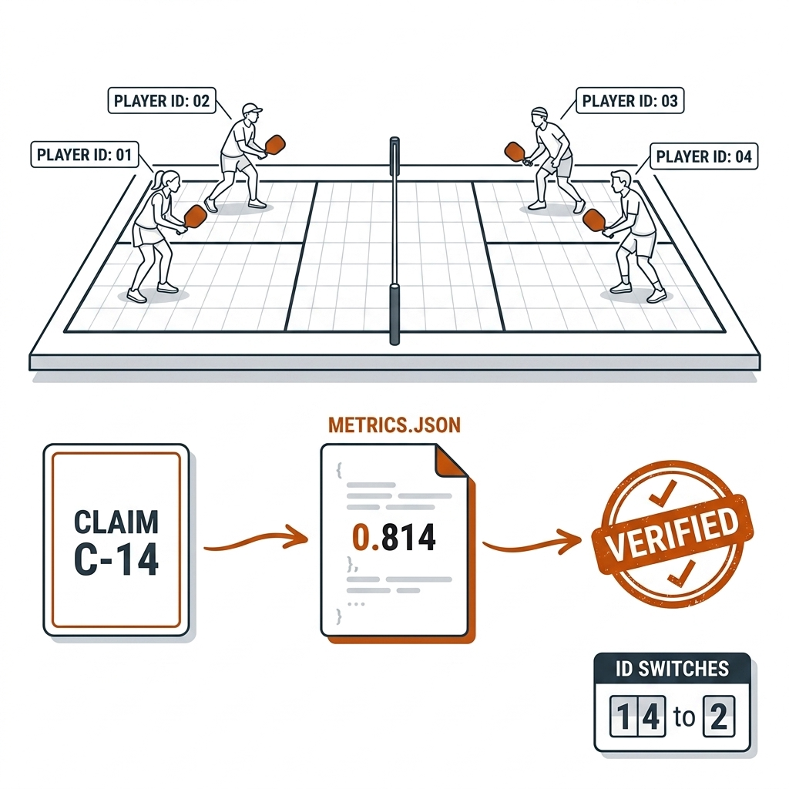
The payoff. A prescription-grade sentence a coach can act on — ReID is worth its compute on fixed side-line footage — and the tracker chapter (chapter 9) builds its recommendation on exactly this row. Tier 1 does not mean "true everywhere"; it means "true here, and here is the disk path."
Case 2 — The Tier 4 Claim Caught: The Hallucinated Coaching Tip
The claim. A local vision-language model, handed raw pb-003 frames, narrated the rally in fluent coaching prose — who was late to the kitchen, why the third shot failed, what to drill next. It read exactly like a clinic handout. The adversarial loop then checked six of its factual claims against the tracked coordinates: four were fabricated. Register row C-11 records the result: a 66.7% hallucination rate on raw-frame narration (e13-vlm-adversarial-loop, key single_agent_e07.hallucination_rate_pct, VERIFIED).
The tier. The narration itself is Tier 4 — ungrounded generation, however confident the tone. The 66.7% error measurement is Tier 1 — executed locally, artifact on disk. The case keeps the two apart: fluency is not a tier, and confidence is not a metric.
The audit path. The loop is the audit: extract the VLM's checkable claims, resolve each against tracking rows from the same frames, count the mismatches. Four of six failed. Without the tracked coordinates underneath, the narration was unauditable — which is precisely the state most AI-generated coaching tips live in. The pickleball tip was caught because the book owns the ground truth for its fixture; the rugby equivalent — a VLM summarising a broadcast set ("the defensive line folded on tackle four") — gets the same treatment, and the same skepticism, against e08/e14 tracking rows.
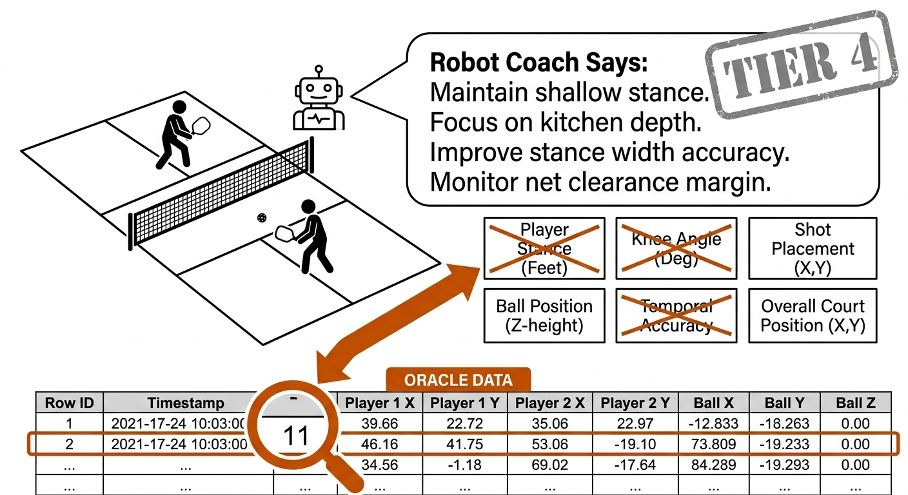
The payoff. The rule that protects every downstream chapter: no VLM sentence reaches a coaching page ungrounded. This case is the evidence base for chapter 16's adversarial video-understanding loop and chapter 25's VLM grounding discipline — the model drafts, the tracking rows decide.
Case 3 — The Provenance Audit: Tracing a Figure Back to Raw Footage
The claim. Figure 2.3 shows the rugby baseline's fragmentation: 295 unique track IDs on twenty-three players. A skeptic's question — which footage does that number describe, exactly? — is the provenance audit's starting pistol.
The tier. Tier 1, but only because the chain is intact. The same number with a broken chain — a re-encoded input, an unnamed clip — drops to unverifiable regardless of who ran the experiment.
The audit path. Walk the manifest backwards. The claim names e08-rugby; the experiment's metrics.json names its input manifest; the manifest names the processed tackle-slice clips it consumed, each with a content hash, the transform that produced it (ffmpeg slice, code version, timestamp), and the hash of the stage above; the chain terminates at the RG-001 broadcast master hash — immutable, never edited in place. Every hand-off answers one question: what did this file come from, and can I re-derive it? The pickleball chain walks the same way: C-01's 69-raw-to-11-filtered detection count only means something because the manifest ties the JSON to the exact pb-003 master it was computed from. The failure this prevents is the re-encode trap of section 2.4: a convenience transcode silently changes bit rate, frame timing, and motion blur, and an un-hashed pipeline would never notice that its metrics describe a different artifact.
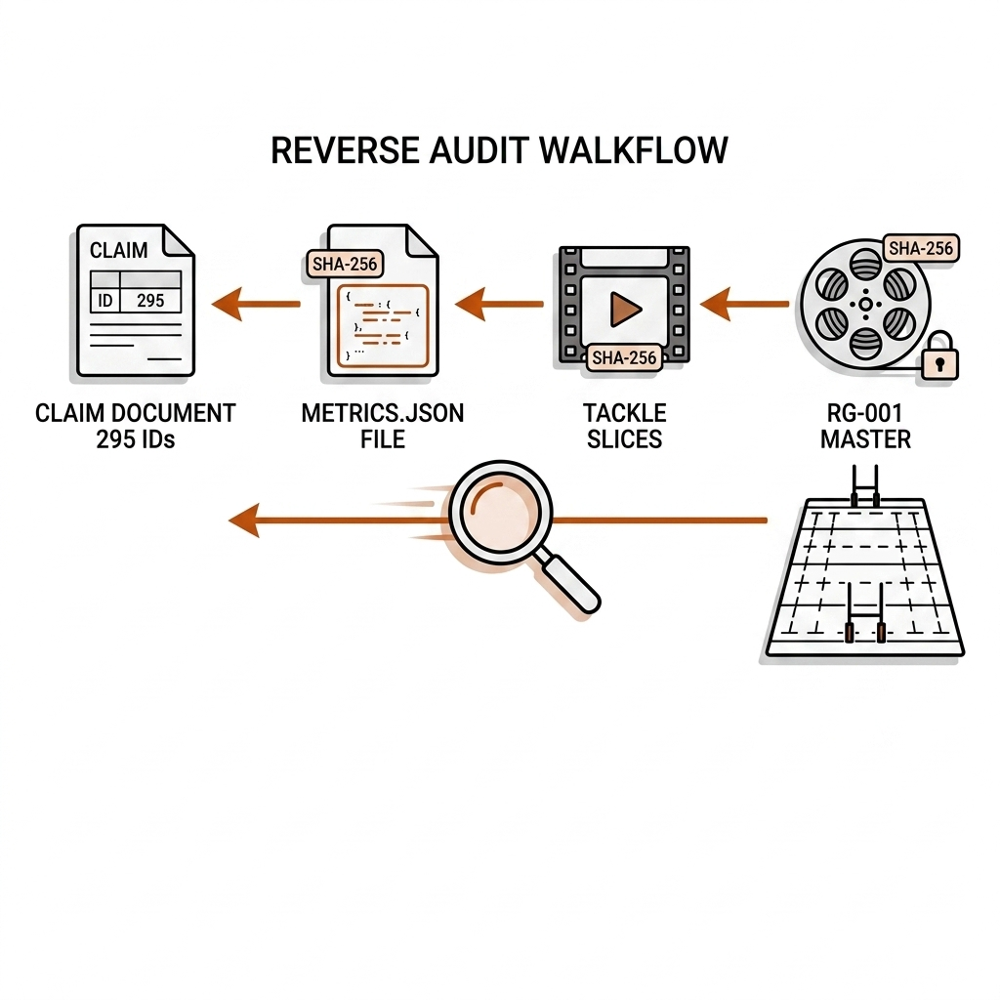
The payoff. Provenance converts "trust me" into "check the manifest." When a number is challenged — by a reviewer, a reader, or the author six months later — the answer is a hash chain, not a memory.
Case 4 — The Claims-Register Decision: What Earns [verify]
The claim. The same experiment produced two register rows with opposite fates. From e10-ball-temporal: C-15 — "the 3-frame temporal energy filter lifts ball-detection precision from 4.2% to 81.3%" — VERIFIED, because the artifact key temporal_3frame_difference.true_ball_precision_at_50 holds exactly that. And C-16 — "the filter reaches 87.2% recall with 218 true detections" — RE-LABEL, because the artifact holds no such numbers; the nearest real key is track_continuity_pct, a different metric with a different value.
The tier. Both claims pointed at a Tier 1 experiment. Only one of them was a Tier 1 claim. The tier attaches to the sentence, not to the lab it cites.
The audit path. The register's decision tree, applied to both rows: artifact value matches prose → VERIFIED; artifact contradicts prose → BLOCKED (the fate of C-04, ByteTrack's "no switches" sentence, falsified by e02's 26 IDs on four players); artifact holds a different truth → RE-LABEL, and the chapter sentence is rewritten to the smaller, real number. And where does [verify] fit? It is the label for a claim with a plausible source but no local artifact — the clinic tip that "advanced players dink crosscourt seventy percent of the time" is the book's running example: not contradicted, not measured, not usable as evidence, and not deletable either, because it is a genuine hypothesis. [verify] is never an endpoint; it is a queue entry, and the register row for such a claim carries its exit ramp — a proposed test (count crosscourt dinks on the golden fixture).
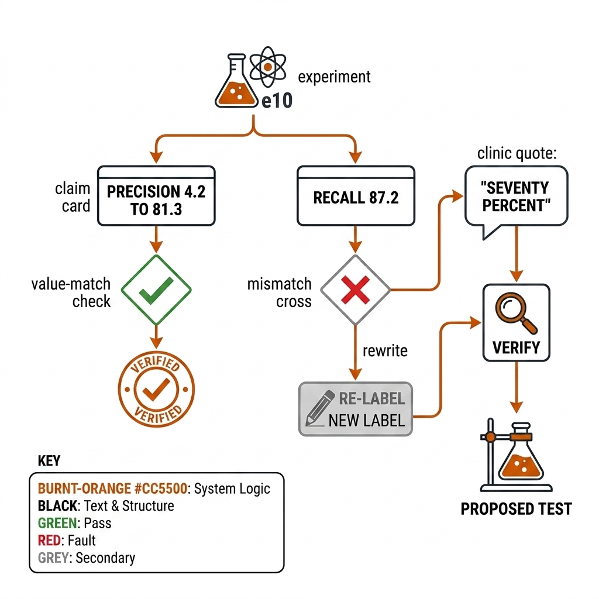
The payoff. [verify] becomes an honest middle state with a defined exit, rather than a euphemism for "probably true." Chapters 12 (ball tracking) and 9 (tracking) both carry sentences rewritten by exactly this verdict — the reader sees the real 81.3%, never the plausible 87.2%.
Case 5 — The Citation Discipline: Paper, URL, Date — or It Didn't Happen
The claim. Register row C-24, the register's only sourced row: "SAM 3 (Nov 2025) and SAM-3D-Body (DINOv3) are public Meta releases" — status VERIFIED, backed not by an experiment but by a dated verification note (docs/research/2026-08-30-sam3-sam3d-body-verification.md) that records the primary sources checked: the Hugging Face model cards facebook/sam3 and facebook/sam-3d-body-dinov3, with URLs and the check date.
The tier. Source-backed — the strongest tier available to a claim the book did not execute itself. It licenses the sentence "these models exist and are public"; it does not license any performance number for them (chapter 10 labels those [verify] until local fixtures produce one).
The audit path. Three slots, always three: the primary document, a resolvable URL, the date checked. The date is the slot people skip and the slot that matters most, because every class of source drifts: model cards get edited (license terms and capability claims change), rules pages get revised (USAP and NRL documents update between seasons), and blog posts get silently corrected. "BoT-SORT improves association robustness" is incomplete; "BoT-SORT (arXiv:2206.14651, checked 2026-08-30)" is a claim a reader can chase. The anti-attribution rule binds here too: the citation names the primary artifact — the card, the paper, the rulebook — never "Meta's team claims" or "league sources say," because an authority named without its document is prestige borrowed against no collateral.
The payoff. A source-backed claim is one a reader can re-check in five minutes, today and in two years. Chapter 34's reference index exists because this discipline scales; every label in every chapter points into it.
Case 6 — The Consulting-Firm Trap: Attribution Is Not Evidence
The claim. A glossy rugby league strategy whitepaper asserts that elite teams win by shifting the point of attack late in the tackle count — attributed to a famous consultancy's sports practice, decorated with round numbers and a season-count of matches "analysed," offering no dataset, no method section, no independent n, and no artifact. It arrives pre-packaged with the most dangerous property a Tier 4 claim can have: it sounds like it has already been verified by someone more credible than you.
The tier. Tier 4, unchanged by the logo. Attribution to a famous firm is itself a red flag, not a credential: genuine evidence does not need the firm's brand to stand, and the brand is doing the work the missing method section should have done. The trap has a pickleball twin — the line-calling product page's "99% accuracy," a number with no conditions and no artifact — and the two are treated identically by this book.
The audit path. Run the five-minute audit and watch it fail at step 2: no register entry, no methods page, no artifact path; the only resolution is a marketing PDF. Verdict: [verify] at best, barred from every sentence type that matters — no prescriptions, no strategy commitments, no "studies show." But the discipline does not stop at rejection; it converts the claim into work. The whitepaper's hypothesis is falsifiable, and the book owns an instrument that could test it: the e08/e14 broadcast tracking pipeline (chapter 14) produces the player identities and pitch positions from which a tackle-count point-of-attack shift metric could actually be computed, and chapter 22's expected-value lineage — honestly labeled concept-transfer from soccer — is the framework the result would slot into. That is the full move: strip the borrowed authority, label the gap, and write the proposed test.
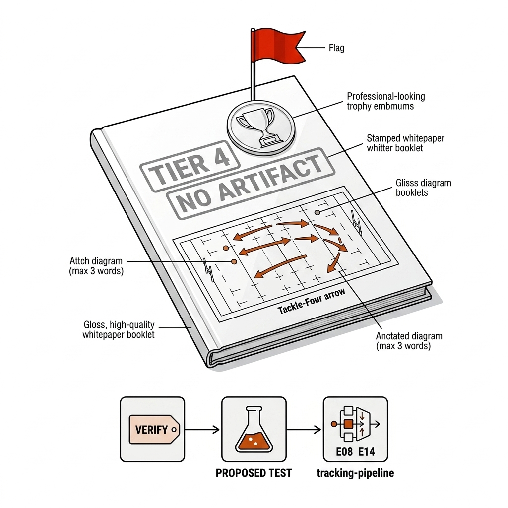
The payoff. The anti-attribution rule protects in both directions: the book refuses borrowed authority from famous firms, and refuses to lend its own gaps any authority it has not earned. "Unknown, with a proposed test" beats "a leading consultancy found" every time — because only one of those sentences can ever become Tier 1.
What these cases add to the pipeline. The verdicts cited here are the load-bearing inputs to the technique chapters: C-14's bake-off result carries chapter 9's tracker recommendation; C-15/C-16's split verdict governs chapter 12's ball-tracking claims; C-11's hallucination measurement is the premise of chapters 16 and 25; the e08/e14 rows behind cases 1, 3, and 6 are the baseline every rugby-side number in chapters 14 and 28 is audited against; and the citation discipline of case 5 terminates in chapter 34's reference index. The contract is not a preface to the book — it is the book's build system.
2.9 Key Takeaways
- Tier 1 or nothing: a coaching claim requires a local experiment + artifact. Prescriptions in pickleball and strategy in rugby league both draw on the same tier, and neither may dip below it.
- The register is runnable:
claims_register.py, 24 claims, 0 problems is the pass bar. BLOCKED and RE-LABEL are the contract working, not failing. - No claim without an E-ID or a [verify]: the two bindings are the whole game; a sentence with neither is deleted on sight.
- Derived ≠ raw: content-hash every derived asset; a re-encode is a different artifact, and its metrics must say which input they describe.
- The golden fixture is the CI: six frames, re-run on every change, no unexplained drift — pickleball has one, rugby's is a proposed test, and the asymmetry is labeled.
- Never launder Tier 4: no borrowed authority, no "industry benchmarks suggest." Cite the primary source with a URL and a check date, or label the gap unknown.
2.10 Sources
- Claims register + auditor:
lab/claims_register.py→ state/claims-register.json (24 claims, 17 VERIFIED, 3 BLOCKED, 4 RE-LABEL, 0 problems — measured). Experiments cited: e02-tracking, e03-pose, e04-ball, e06-events, e08-rugby, e09-tracker-bakeoff, e10-ball-temporal, e12-tacticai-doubles, e14-gmc. - NIST AI Risk Management Framework — the provenance/evidence frame the book aligns to: https://www.nist.gov/itl/ai-risk-management-framework (checked 2026-08-30).
- ByteTrack: Zhang et al., "ByteTrack: Multi-Object Tracking by Associating Every Detection Box," arXiv:2110.06864 — https://arxiv.org/abs/2110.06864 (checked 2026-08-30).
- BoT-SORT: Aharon et al., "BoT-SORT: Robust Associations Multi-Pedestrian Tracking," arXiv:2206.14651 — https://arxiv.org/abs/2206.14651 (checked 2026-08-30).
- TacticAI (the Tier 3 concept-transfer source for chapter 8's GNN): Wang et al., Nature Communications 2024 — https://www.nature.com/articles/s41467-024-45965-x (checked 2026-08-30).
- Meta SAM 3 model card (C-24, source-backed release reference): https://huggingface.co/facebook/sam3 (checked 2026-08-30).
- The primary-source discipline throughout: USAP rules (https://usapickleball.org, checked 2026-08-30), NRL laws (https://www.nrl.com, checked 2026-08-30), the verified papers (arXiv DOIs per chapter) — every citation carries a check date (the book's reference index, chapter 34).
- Tier labels per the style guide:
books/agentic-sport-analysis/state/style-guide.md— the evidence-label vocabulary.